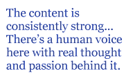

First, a caveat. I read poetry strictly for pleasure, in dribs and drabs, and am not really qualified to write reviews, but Paul asked me to write this one and I couldn’t get out of it.
I put off reading the book for several weeks, not because I didn’t have time, but because I hated the title: Unexpected Light. Blech. I was sure it was going to be boring. Thankfully, the book turned out to be much better than its title.
It doesn’t hurt that the collection spans ten years. At around 150 pages it’s longer than average, but still pretty slim, considering. In a world where many poets seem to think they have to crank out a book a year, that kind of restraint is commendable. It shows a certain respect for the reader, picking and choosing, not just rushing to put everything out there.
With some exceptions, Chaffin writes free verse that’s not quite “conversational,” but relatively natural-sounding, avoiding complicated syntax, with lines mostly broken at syntactical breaks. (See? A real reviewer would have known the word for that.) The art here is in the imagery, the voice, and the selection and arrangement of content. The content is consistently strong; you’re never left, at the end of a poem, without something to think about. And sometimes puzzle over, but not pointlessly. There’s a human voice here with real thought and passion behind it.
From “At the Vietnam War Memorial”:
Beat against this polished rock, America,
this vast projective surface for your sins,
wear your bloody heart out.
It’s not how many died
but that they died in vain, achieving
nothing except our grief for them.
Wow! You don’t see lines like that every day. They risk being called OTT, over the top. Mark Twain said, “Why not go out on a limb? That’s where the fruit is,” and here the fruit is a kind of raw beauty that cannot be achieved by understatement or cleverness. It’s just too bad the author had to ruin it by wimping out:
It’s said you cannot write a good poem
until recollected in tranquility.
Let this then be a bad poem...
Love the attitude, but please, just do it, don’t talk about it in the poem. (It’s also ungrammatical, unless “you” is really meant to be the subject of “recollected.” Tsk tsk!)
I mentioned puzzling over poems in a good way. To show what I mean, here’s the second half of “Chico Creek”:
Water is what I remember.
Peering down,
my eyes were forced
to choose between
the rounded bottom stones
trailing green algae
and the surface
twisting like Saran wrap.
One can’t see both —
a metaphor, I suppose.
How can we commit
self-pity without laughing?
The nice thing about this metaphor is that it’s not obvious or mechanical. It works, but I’m not sure I could explain exactly why. I think water is meant to represent the subjectivity through which we see the self, but there are other possibilities.
There’s plenty of good, thoughtful stuff like that, but the best poems are the fierce ones. “Christ’s Lighthouse“, a poem about spiritual struggle, is refreshingly intense. An awful lot of contemporary poems about Christianity are either bitter or wishy-washy. Not this:
Do I dare now? Do I dare say
I see it always, through iron bars
and self-revulsion as if the great stone
of the world were rolled away?
It’s ironic that the book’s title, which I hate, comes from a poem I like very much: “Prayer to La Virgen,” one of the few metrical poems in the book, apparently inspired by a shrine to Our Lady of Guadalupe. I love this part:
and yet this cheesy, plastic abomination
....
is too much for one brought up Lutheran.
Ha! But the poem ends on a respectful, tender note.
The last section of the book consists of 25 pages of love poems. It’s hard to write a decent love poem. Chaffin’s good at it. There’s humor...
... Daily
I embarrass myself, collar strangers,
weary my children. I am the ancient mariner
fated to speak of you wherever I go
imaginative metaphors...
Do not wake her to this
strange world of silence
But touch her skin and hear
the gong of descending submarines
...and a couple of erotic ones that you’ll like or not, depending on what turns you on.
There’s a certain fearlessness in the love poems, like the kind you see in old poetry. I like that. A man in love should be desperate and foolhardy.
Most of the poems are short, one page or less. Themes vary widely, as you’d expect in a book this long. The difficulty level ranges from “Huh?” to “I bet Garrison Keillor would like this”, with most falling somewhere in the middle.
All in all, I’m glad Paul made me read this book, which is not one I would have reached for instinctively. I’m big on rhyme and meter and other sonic effects, and some of the poems are a little prosy for my taste, but a poet can be a brilliant metricist and write anemic poems. These are full of life.